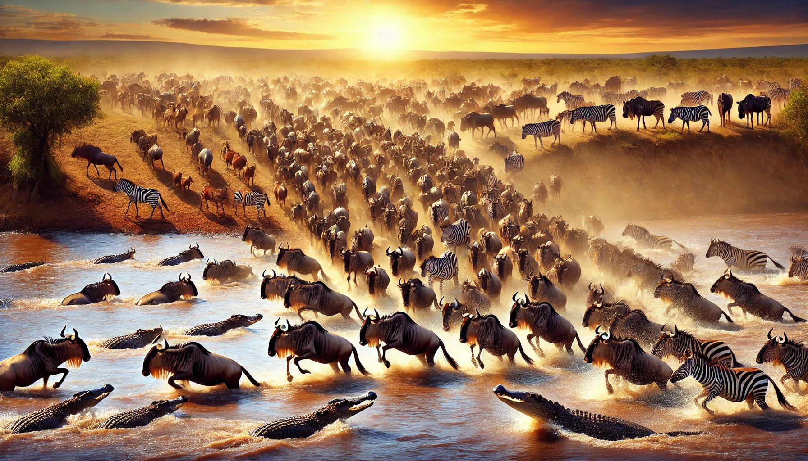
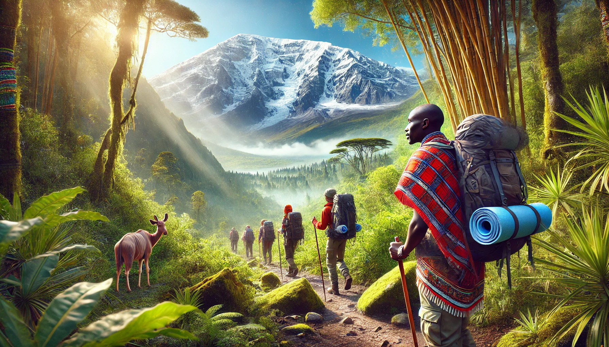
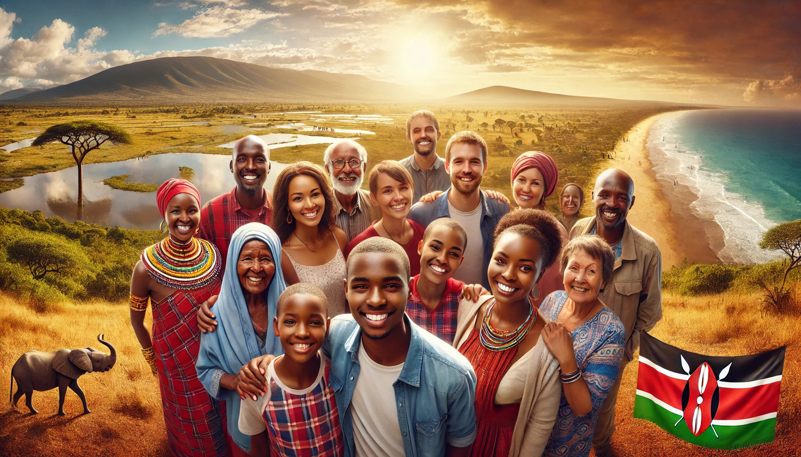

WI’ve called Kenya my home for most of my life, and every day it reminds me just how special it is.
When I was a child living on the Isle of Mombasa, I woke up to the sound of waves rolling onto the shore; in the distance, fisherman boats drifted across the horizon.
On weekends, my mother—an accomplished hotelier—would take me to explore hidden beaches, bustling markets, and cultural festivals.
Even after decades of roaming around my beloved homeland, Kenya’s magic still enchants me.
It’s a country that brims with safari adventures, pristine coastlines, towering mountains, and the warmest of welcomes.
Whether you’re an intrepid traveler seeking off-the-beaten-track experiences or someone who just wants a relaxed getaway, let me be your guide.
I’ll show you why locals like me refer to our nation as “Magical Kenya.”
The Coastal Jewels: Mombasa, Diani & Lamu
Mombasa’s Island Charm
My hometown of Mombasa offers a heady blend of African, Arab, and Portuguese influences.
Wander into the Old Town, and you’ll see centuries-old architecture reflecting an Arab heritage—a mesmerizing labyrinth of narrow alleys, ornate balconies, and lively bazaars.
You might want to pick up hand-carved wooden souvenirs or spiced Swahili coffee beans as reminders of your trip.
After immersing yourself in history, head to the beaches lining Mombasa’s North and South coasts.
I’ve spent countless afternoons relaxing on the white sands at Nyali Beach or snorkeling in the crystal-clear waters off Bamburi.
If you’re craving wildlife, pop by Haller Park—a reclaimed quarry-turned-nature sanctuary full of giraffes, hippos, and giant tortoises.
Insider Tip: For an authentic taste of Mombasa, sample Swahili cuisine—pilau rice, grilled seafood, and fresh coconut curries. Local eateries often cook right on the beach, so you can dine with your toes in the sand.
Diani: A Coastal Paradise
An hour south of Mombasa lies Diani Beach, one of the most stunning stretches of shoreline I’ve ever seen.
Picture powdery white sand, turquoise waters teeming with coral reefs, and palm trees swaying in the breeze. Water sports abound—kite-surfing, scuba diving, glass-bottom boat rides—or you can just laze under a palm frond with a good book.
Getting There: You can travel by ferry from Mombasa’s Likoni crossing, then a short drive to Diani. Taxis and matatus (local minibuses) are available, but if you prefer comfort and reliability, I recommend hiring a car or arranging a private transfer through your hotel.
Lamu Island’s Timeless Allure
Tucked further north along the coast is Lamu, a UNESCO World Heritage site that feels frozen in time.
Donkeys, not cars, rule the narrow alleyways, and dhows (traditional sailing vessels) bob in the harbor.
I remember the first time I visited Lamu—I felt as though I’d stumbled into a storybook.
Stroll through the old fort, chat with friendly locals, and take a sunset dhow cruise for a truly serene experience.
Must-Try: Swahili breakfast—mahamri (puff bread) with a side of sweetened tea—makes waking up here extra special.
Safari Adventures: Maasai Mara, Amboseli & Tsavo
The Great Migration at Maasai Mara

If you’ve dreamt of witnessing a vast sea of wildebeest thundering across open savannahs, the Maasai Mara is calling your name.
During the Great Migration (July–October), over a million wildebeest and zebra cross the Mara River to Tanzania’s Serengeti.
Watching the herds in person—hooves pounding, dust swirling—is an experience that redefines “epic.”
My own memory?
Standing on the riverbank, hearing the thunder of hooves, and feeling my heart pound in sync.
The Mara also teems with predators—lions, leopards, cheetahs—so keep your camera ready.
Ideal Timing: Peak migration often occurs late July into August, though exact dates vary. Book your safari lodge well in advance, as this is the busiest season.
Amboseli: Elephants & Kilimanjaro Views
Nestled near the Kenyan-Tanzanian border, Amboseli National Park is famed for its herds of free-ranging elephants, set against the majestic backdrop of Mount Kilimanjaro.
I’ve seen elephants ambling across the plains while that snow-capped peak loomed overhead—it’s a surreal scene that feels straight out of a postcard.
What to Expect: Mornings can be crisp, with Kilimanjaro often hiding behind clouds later in the day. If you’re an avid photographer, wake up early for the best chance of capturing that iconic shot: elephants in the foreground, Kili in the background.
Tsavo: Where the Wild Things Roam
Tsavo East and Tsavo West together form one of the largest national parks in the world.
Tsavo East’s red earth and open savannah contrast with Tsavo West’s rugged, volcanic terrain.
I once spent an evening in Tsavo West marveling at Mzima Springs, a crystal-clear pool inhabited by hippos and crocs.
Few safari experiences match the raw, untamed atmosphere of Tsavo.
Getting Around: Both Tsavo sections are easily accessible by road or a short domestic flight from Nairobi. If you have time, consider spending at least a night in both East and West for a fuller experience.
Nairobi & The Central Highlands
Nairobi’s Urban Energy
Oftenn overshadowed by the coast and safaris, Nairobi—Kenya’s capital—has its own brand of allure.
It’s a vibrant city brimming with business, nightlife, and cultural stops like the National Museum and the Karen Blixen Museum.
But what makes Nairobi truly unique is Nairobi National Park, sitting right on the city’s edge.
Where else can you see giraffes and rhinos with skyscrapers in the background?
Pro Tip: Grab lunch at a local nyama choma spot—succulent roasted meat served with ugali (cornmeal) or chapati (flatbread). You can’t leave Kenya without indulging in this classic dish.
Mt. Kenya & The Aberdares

For mountain lovers, Mt. Kenya (Africa’s second highest peak) offers trekking routes through lush forests, bamboo zones, and rocky terrain.
I’ve hiked smaller sections—like the Sirimon route—and the crisp air and panoramic vistas remain etched in my mind.
Further west, the Aberdare Range offers waterfalls, dense forests, and a chance to spot rare species like the bongo antelope.
When to Go: The drier months (roughly June to September and January to February) typically offer clearer skies for mountain climbing. Carry warm layers—altitude brings cold nights.
Off-the-Beaten Path: Lakes & Islands
Rift Valley Lakes
Kenya’s Great Rift Valley is dotted with remarkable lakes—Naivasha, Nakuru, Bogoria—each boasting unique ecosystems.
Lake Nakuru was once famed for its vast flamingo flocks, painting the shoreline pink, while Lake Naivasha is a favorite for boat rides among hippos and fish eagles.
Wasini Island
If you’re a fan of marine life, Wasini Island, near the Tanzanian border, beckons with vibrant coral reefs.
I’ve snorkeled here among colorful fish and watched dolphins glide by the dhow. Fewer tourists venture to Wasini, so it’s a peaceful spot to immerse yourself in coastal nature.
Practical Travel Tips: When to Go & How to Get Around
- Weather & Seasons: Kenya generally has two rainy seasons—March to May (long rains) and October to December (short rains). Safaris might be trickier during the heavy rains, but you’ll enjoy lush scenery and fewer crowds. The driest months (January–February, June–September) often offer ideal wildlife spotting.
- Transport: Domestic flights connect major hubs like Nairobi, Mombasa, Malindi, and the Masai Mara. Kenya’s SGR (Standard Gauge Railway) is a scenic option between Nairobi and Mombasa. For local travel, taxis and ride-hailing apps like Uber or Bolt are safer alternatives to public minibuses (matatus), though matatus can be cheaper—and an adventure in their own right!
- Budget & Accommodation: Kenya caters to all wallets—backpacker hostels, mid-range lodgings, and ultra-luxury safari lodges. Book well ahead if you’re traveling during peak seasons (July–August for the Great Migration, December holidays on the coast).
- Cultural Sensitivity:Dress modestly in conservative regions (like Lamu’s Old Town), and always ask before photographing locals. A simple greeting in Swahili—“Jambo!”—often goes a long way in breaking the ice.
Conclusion: Embrace the Magic of Kenya

From the sun-drenched beaches of Diani to the bustling energy of Nairobi, from the wildlife spectacles in Maasai Mara to the tranquil heights of Mt. Kenya, my homeland is a place of astonishing contrasts and endless wonder.
It’s where centuries-old Swahili traditions intersect with modern city life, and where you can go from desert plains to alpine forests in a single day’s journey. Every time I leave Kenya, I yearn to return; every time I come back, I discover something new.
So, let me extend my personal invitation: Come experience the warmth of our people, the tapestry of our landscapes, and the thrilling encounters with our wildlife.
Whether you’re chasing the Great Migration or sipping fresh coconut water on a secluded beach, Kenya will greet you with open arms—and leave you with memories you’ll treasure for a lifetime.
Ready to Explore?
Pack your bags, brush up on a few Swahili phrases (like “Asante” for thank you, and “Hakuna Matata”, it’s alright!), and dive into the adventures that await. If you have questions or need insider tips, I’m more than happy to share my knowledge—you might just find me soaking in the coastal breeze in Mombasa or gazing at elephants under Kilimanjaro’s shadow.
Karibu Kenya! (Welcome to Kenya!)
📩 Need travel and leisure copy or content strategies? Let’s Work Together